We coded a cloth simulation for this project, using physical concepts like masses and springs to model the cloth. Cloth sims are used for creating clothes and fabrics in animation, which is important for creating realistic motion and saving animators time. To implement our cloth simulation we coded the physics equations for our grid of points and handled cloth collisions with spheres, planes, and the cloth itself. For the final part of the project, we created shaders to shade the cloth with diffuse and Blinn-Phong shading as well as textures, bump maps, displacement maps, and environment-mapped reflections.
Part 1: Masses and springs
| 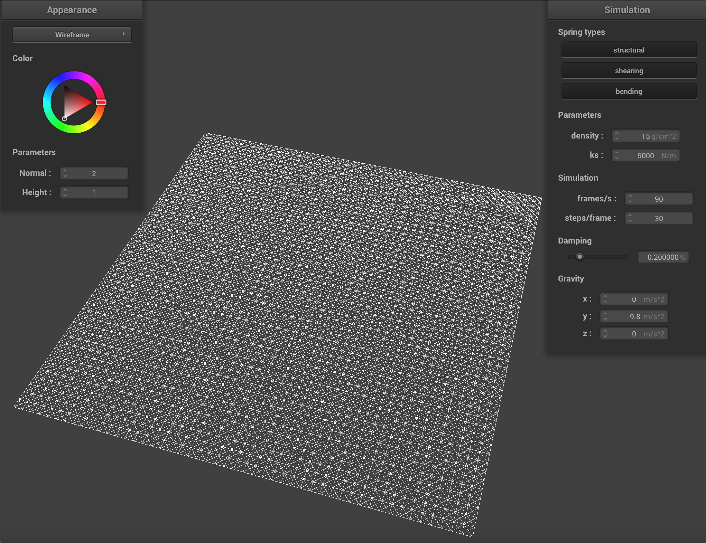 | 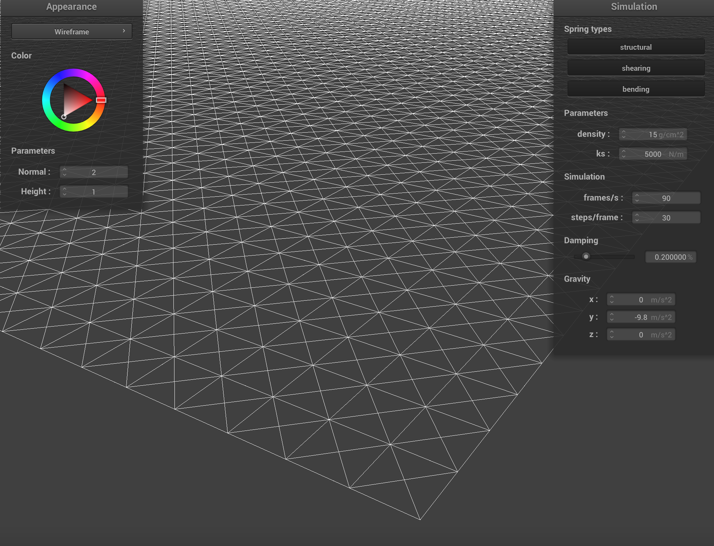 |
|
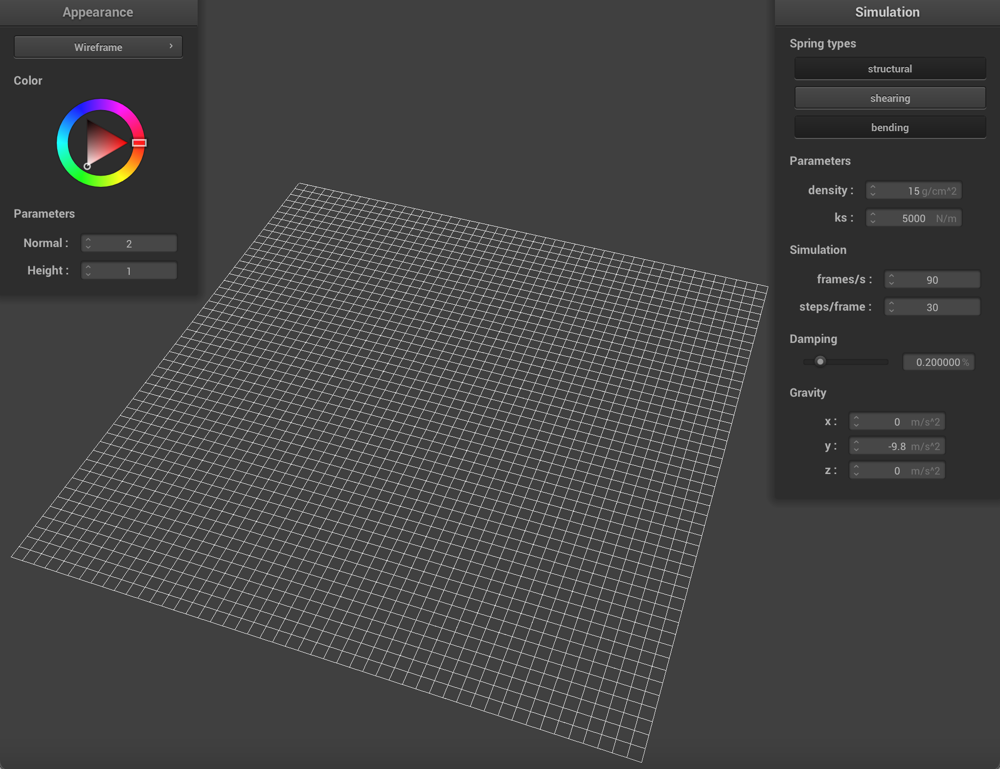
|
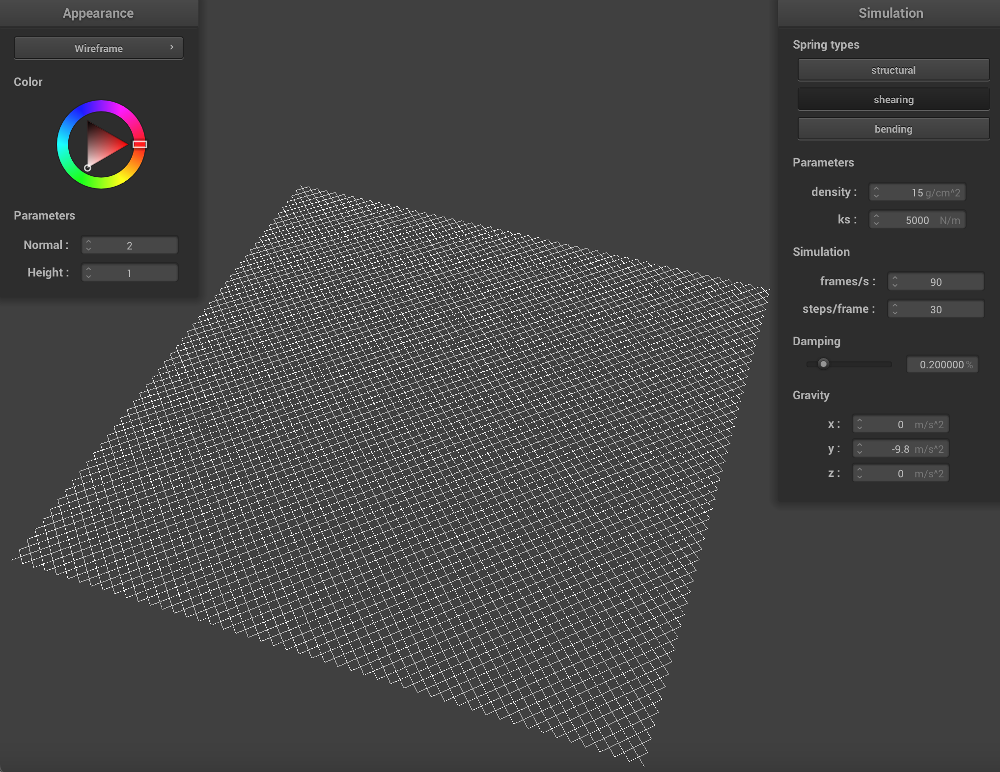
|
Part 2: Simulation via numerical integration
In this part of the project we modeled the physical forces on each point mass within the cloth. The first step is to account for the force of gravity on every point. Then we account for the forces between springs using Hooke's law. Once we have computed the force on all point masses, we use Verlet integration to compute the new positions of the masses, which integrates these forces over time and incorporates damping. Finally, we constrain the lengths of springs to be no more than 110% of their rest length so that no point is unreasonably moved by the algorithm. Taken together, these many moving point-masses approximate the motion of a real cloth.
The parameter ks controls the stiffness of the cloth. The cloth is most stiff (does not sag and looks like a solid plane rotating about the two pinned points) at high values of ks.
The parameter density controls how much the cloth will fold on itself. With a low density, the cloth is very smooth. And has few ripples in its final position. With high density, the cloth folds onto itself more, creating smaller and more frequent ripples.

|

|
Increasing damping slows down the simulation and the apparent speed of the cloth but produces visually similar results by the end of the simulation. With the 4-pinned-corner cloth, damping changes the number of ripples in the cloth after it fully stretches itself: a higher damping value produces fewer ripples.

|

|

|
Part 3: Handling collisions with other objects
Part 4: Handling self-collisions
| 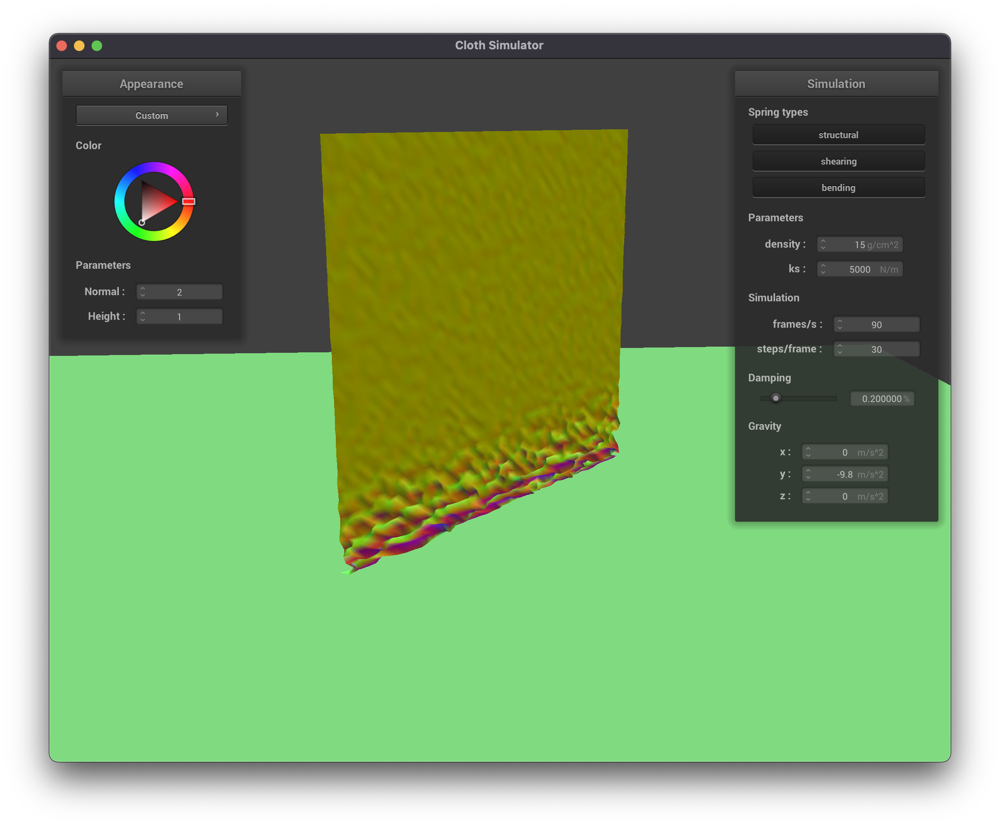 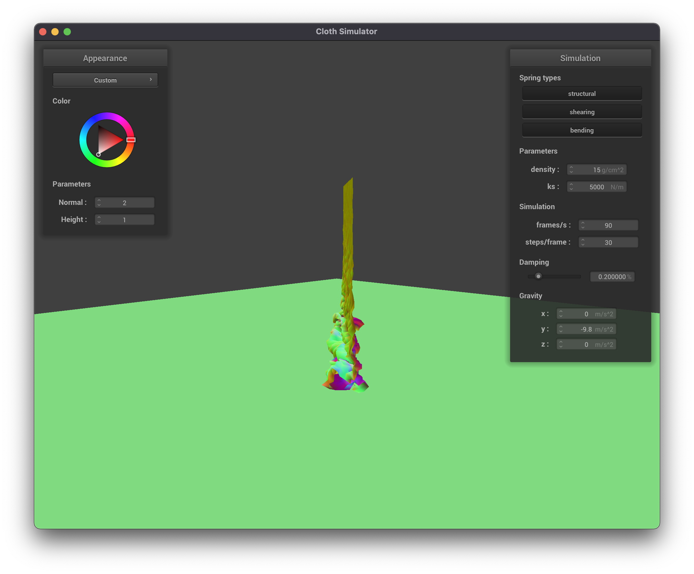 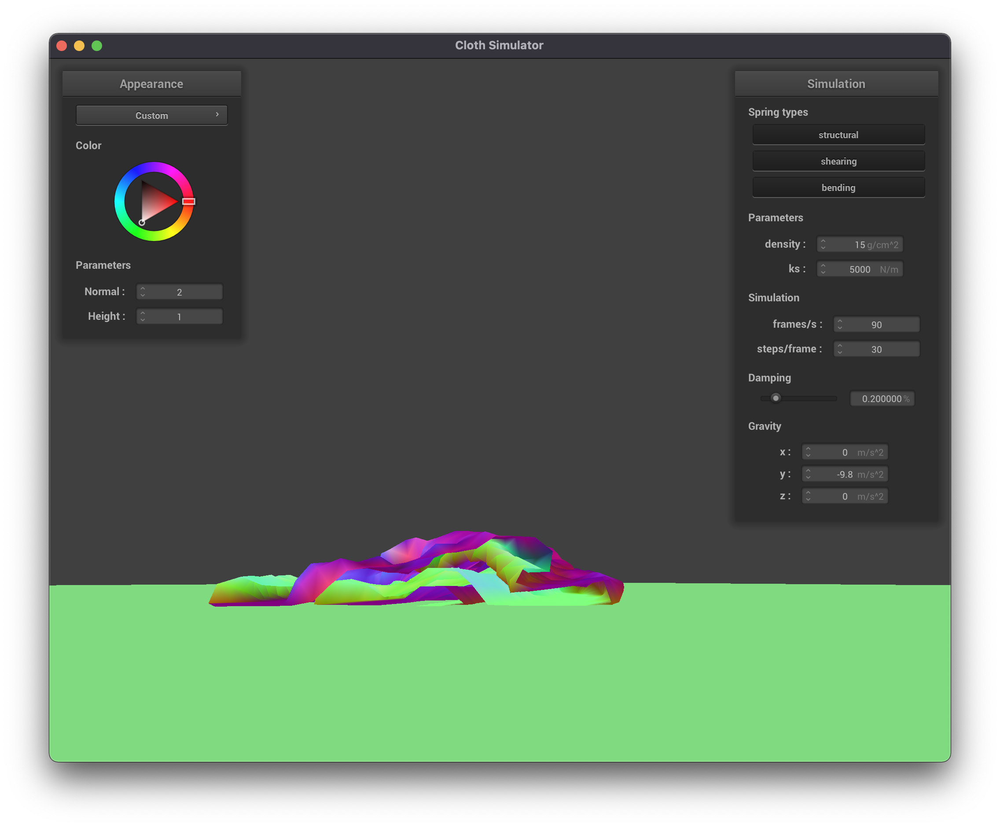 |
When varying the density, the magnitude of the self-collision forces increases. This leads to noisier edges in the cloth (greater displacement of the points) as well as greater frequency of folds. Also, at higher densities, the points far from the plane are affected less by the self-collision forces.
| 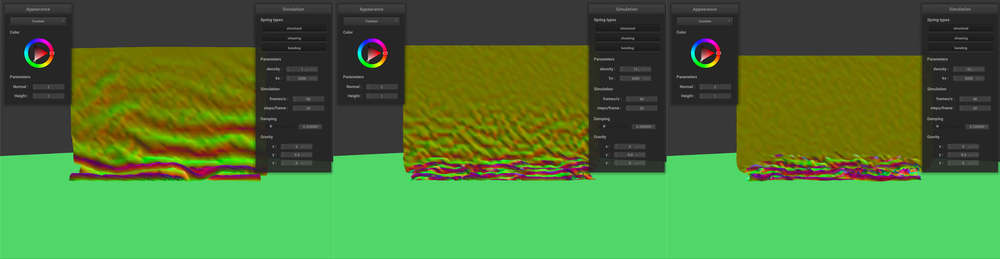 |
A video comparing the rate various densities is below. The screenshot above was taken about 2 seconds in. The images from left to right have densities of 1, 15, and 150 g/cm^2. The three stitched videos are not synced perfectly in time but align closely.
With larger values of ks, the cloth bends at more gradual angles. The folds are larger and more circular and make for more exaggerated motion.
|
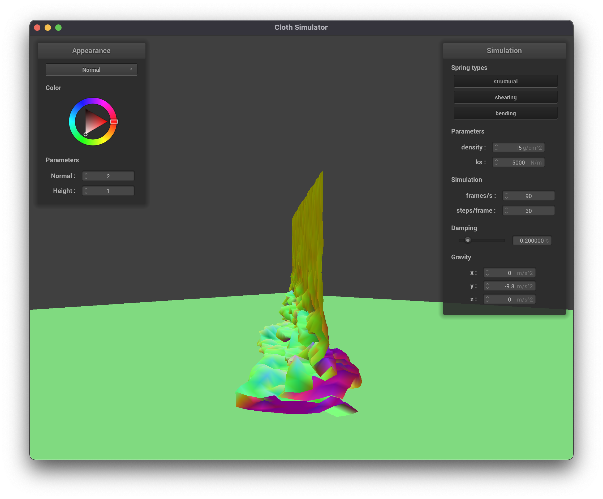
|

|
Part 5: Shaders
For this part of the project, we wrote several shader programs to implement the material shading of the cloth and sphere. A shader program controls how to turn a set of points (for example the points of the cloth) into an image. The vertex shader determines where in space to place the vertices, and the fragment shader specifies how to color the faces connecting vertices. Ultimately it is the fragment shader responsible for determining the final appearance of the materials, so most of the shader programs we wrote were fragment shaders.
Blinn-Phong shading
The Blinn-Pong shading model simulates light behavior to produce a realistic-looking material render. It does not account for shadows and reflections from other objects like a path tracer, but it still models light properties like diffuse reflection, specular reflection, and ambient light from the environment. Some of these properties, like ambient light, are constant for the whole model. Others like specular reflection involve many parameters including camera angle, face normal, and light direction.
| 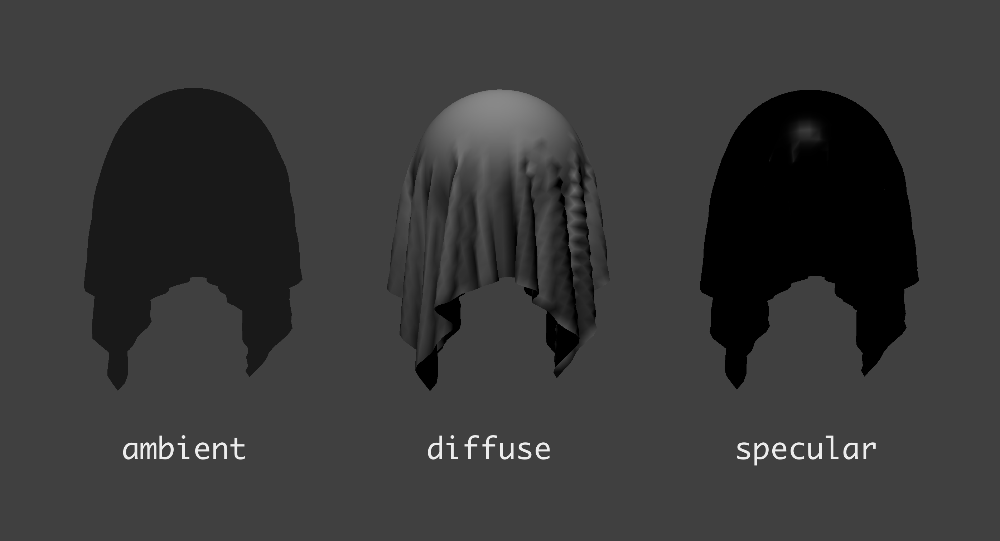 | 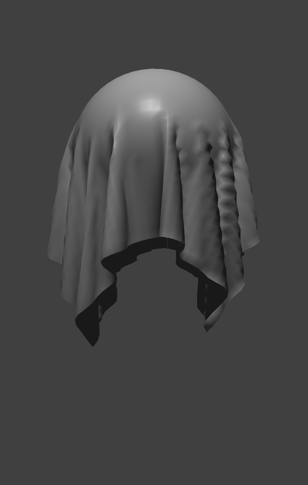 |
Texture Mapping
| 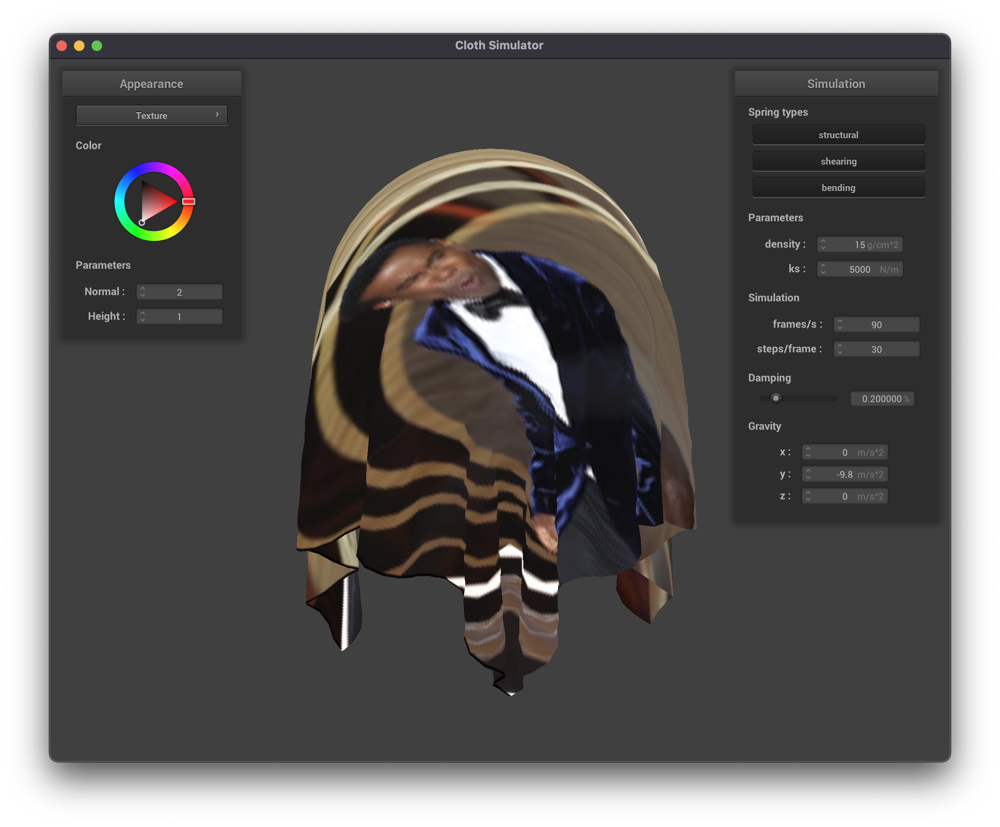 |
For this assignment, Natalie completed parts 1 and 3 while Ryan completed parts 2 and 4. We both worked on part 5. We were able to work well together, and were able to work on parts that were interesting to both of us, while still collaborating on the project together.